PART 1
Introduction to the Project Context
Project Context
Arboviruses are diseases caused by viruses transmitted by arthropods, mainly mosquitoes and ticks, and they can pose serious health risks. SINAN, Brazil's Notifiable Diseases Information System, holds millions of historical records on dengue, zika and chikungunya, including symptoms such as fever, rash and retro-orbital pain, and epidemiological information such as city, occupation and education level.
These data help identify patterns beyond the symptoms. Region, education level and pregnancy, for example, can contribute to classifying cases. During the project, dengue was observed more often among women, a pattern also discussed in the news and possibly related to daily habits and clothing, although its cause is not conclusive.
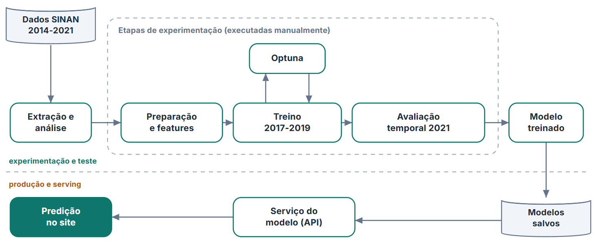
That is where the idea came from: a support tool that could look at all of this information at once and produce a classification score. The goal was never to build an automatic diagnosis, but something to help specialists, or perhaps to support teams during disease "peaks" and better decide who should get an in-person screening quickly.
The intended pipeline was to extract the data from SINAN, apply the necessary variable treatments, train, validate and test with a temporal split, use Optuna to find the best hyperparameters, and save everything for the application, whose main focus is patient screening. Each of these steps is described in the following sections of this report.
Data Dictionary
final_classification:- final case classification — confirmed or discarded.
age_years:- patient's age in years.
sex:- patient's recorded sex.
race:- recorded race or skin color.
education_level:- education level.
occupation_code:- patient's occupation according to the CBO, the Brazilian Classification of Occupations.
pregnancy:- indicates whether the patient was pregnant.
residence_state:- state of residence.
residence_municipality:- municipality of residence.
residence_health_region:- health region of residence.
fever:- presence of fever.
myalgia:- presence of muscle pain.
headache:- presence of headache.
rash:- presence of rash or skin spots.
vomiting:- presence of vomiting.
nausea:- presence of nausea.
back_pain:- presence of back pain.
conjunctivitis:- presence of conjunctivitis.
arthritis:- presence of arthritis.
joint_pain:- presence of joint pain.
petechiae:- presence of small hemorrhagic spots on the skin.
retro_orbital_pain:- presence of pain behind the eyes.
number_of_symptoms:- number of symptoms present.
number_of_reported_symptoms:- number of symptoms that were reported.
days_to_notification:- number of days between symptom onset and notification.
notification_month:- month in which the case was notified.
symptom_epi_week_number:- epidemiological week of symptom onset.
symptom_month:- month in which symptoms began.
local_density:- volume of notifications in the municipality over the previous four weeks.
local_positivity:- recent share of confirmed cases in the municipality.
PART 2
Data Preparation
Initial state of the SINAN data
One important point first: there is a term called "GIGO", short for "garbage in, garbage out", which captures how much a consistent treatment of the SINAN data matters. Before treatment, the data had several problems that would get in the way of both data analysis and a sound machine learning pipeline. Among them were many columns with no use for prediction.
Some of these columns could "leak" the classification, while others simply would not help because of what the column represents. There were also empty fields or fields marked as ignored, each year showed a different pattern in some columns, and after 2021 there is no data with the "Discarded for arbovirus X" classification, which is why data was only extracted, and used for testing, up to that year.
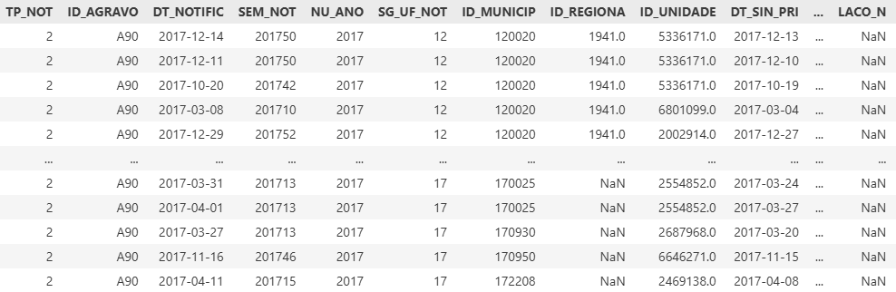
Selecting the years
- The years 2014 to 2016 had missing or incomplete symptoms.
- Using them could teach the model differences in how the forms were filled out, rather than differences between confirmed and discarded cases.
- For that reason, training used the most consistent data, from 2017 to 2019.
- The year 2020 was set aside to tune the models' decisions.
- The year 2021 was held out for the final evaluation.
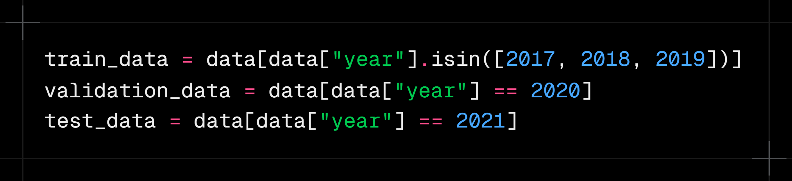
Case classification
- The original classification codes were simplified into two groups: confirmed and discarded.
- Cases without a conclusion or with an inconclusive classification were not used to train the models.
- That way, every record used had a clear answer for what the model was supposed to learn.
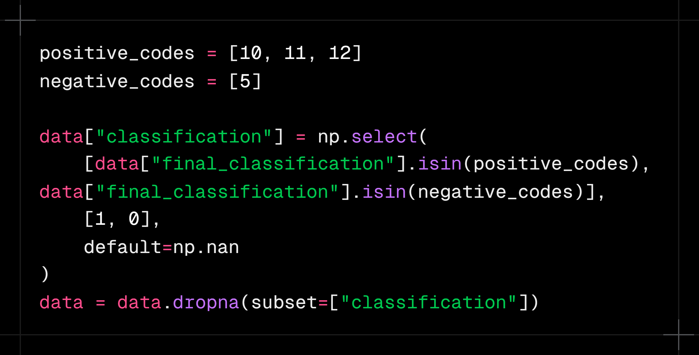
Symptoms
- Symptoms were represented as present, absent or not reported.
- “Did not have a fever” was kept distinct from “we do not know whether they had a fever”.
- Besides the individual symptoms, the number of symptoms present was calculated.
- The number of symptoms actually filled in was also recorded.
- Combinations were created to represent symptoms that appear together.
- Rash and retro-orbital pain received a specific summary because they showed relevant differences between confirmed and discarded cases.
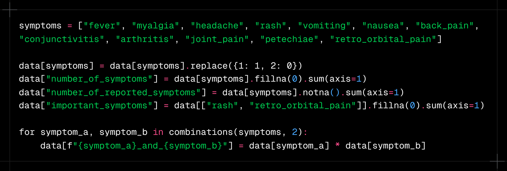
Time and seasonality
- The number of days between symptom onset and notification was calculated.
- Month and epidemiological week were included because dengue circulation changes throughout the year.
- This information was turned into cyclical variables.
- This was needed because the calendar is a cycle: December is close to January, even though 12 looks far from 1 numerically.
- The same logic was applied to epidemiological weeks.
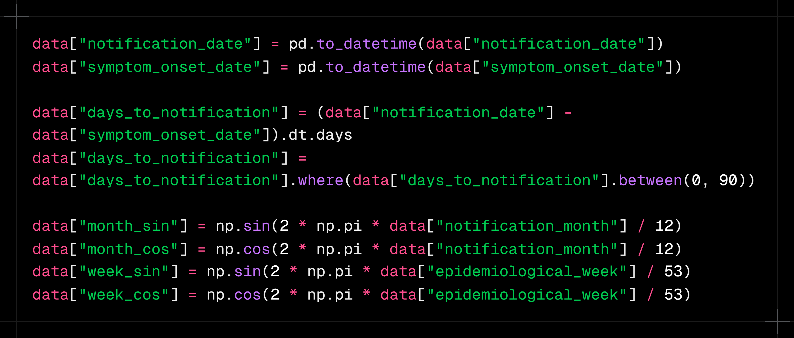
Demographic and location information
Demographic characteristics are a very important part of the treatment. Education levels were grouped into similar levels and arranged on an increasing scale, so the variable represents a progression from missing or unreported schooling up to higher levels such as college, master's and doctorate.
- Columns such as sex, race and pregnancy were transformed with one-hot encoding, which avoids implying an unrealistic progression
- Since there were many occupations, following the CBO, those with few members were grouped into "Other"
Location data was kept at three levels: state, municipality and health region. This is useful because different places have characteristics that can make it easier for these arboviruses to spread and infect people.
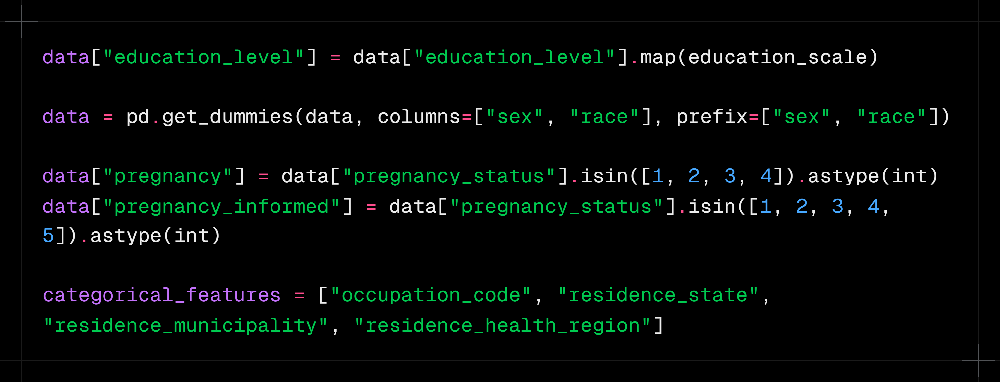
Epidemiological context
One of the most interesting transformations in the project was representing what was happening in the municipality before each notification. This helps capture the local "recent scenario" of arbovirus circulation, and two main pieces of information were created for it:
- Volume of notifications in the municipality over the previous four weeks
- Share of confirmed cases over the same period
The idea is that a person's symptoms can mean different things depending on recent dengue circulation in that area. Only previous weeks were considered, without using the patient's own result. This point deserves its own section because it connects data treatment to the project's epidemiological logic, and it was very useful for increasing the models' overall predictive power.
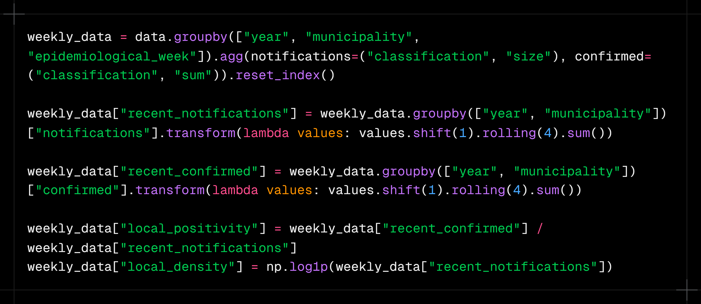
PART 3
Exploratory Data Analysis
This section presents the exploratory analysis of the data used in the project. Before training the models, it is important to understand how the cases are distributed and which characteristics seem to separate confirmed from discarded cases.
The analysis is guided by a few questions. First, we look at an expected behavior or a hypothesis about dengue. Then we use the data to check whether that trend also appears in the SINAN records. Finally, we connect the findings to the decisions made with the models.
Analysis · 01
At what times of year does dengue appear most often? Does the seasonality in the data match the expected epidemiological behavior?
It is well known in epidemiology that dengue tends to appear more often at the end of summer and the beginning of autumn (in Brazil, a Southern Hemisphere country). Temperature, humidity and standing water can favor mosquito development, making certain periods of the year more favorable for the disease to circulate.
Still, we need to check whether this behavior shows up clearly in the data used in the project. If notifications really are concentrated in certain months, that information can help both to understand how dengue behaves and to help the models recognize the context in which each case happened.
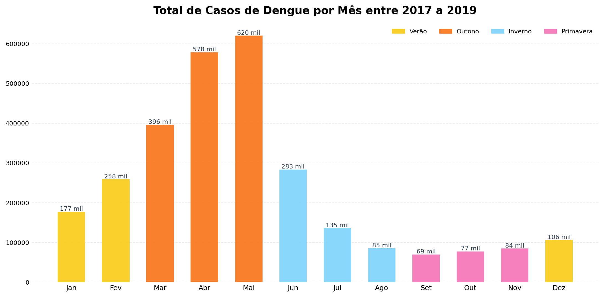
The chart shows the total number of notifications recorded in each month between 2017 and 2019. Cases are clearly not spread evenly across the year. There is a build-up during summer, followed by a much larger concentration at the beginning of autumn.
Absolute peak
May accounts for 620 thousand cases, the highest volume of the whole period. April (578 thousand) and March (396 thousand) complete the autumn peak, which accounts for 60% of annual notifications.
This concentration shows that the March-to-May period is not just a small seasonal variation. It holds most of the notifications observed over the three years analyzed.
Summer build-up
January and February already signal the outbreak (177 and 258 thousand), showing that transmission starts before the peak of the heat.
This shows that growth does not happen suddenly in March. Notifications start rising during summer and keep climbing until they reach their highest level in May.
Winter/spring trough
A sharp drop from August to October (69 to 85 thousand cases), but it never reaches zero: Aedes stays active all year round.
Even in the lowest months, there are still tens of thousands of records. Seasonality is therefore a change in intensity, not the complete disappearance of the disease.
What does this analysis show?
The trend in the data matches the expected epidemiological behavior: cases start growing during summer, peak at the beginning of autumn and decline through winter and spring.
Analysis · 02
Which symptoms appear most often in confirmed cases? Are the most common symptoms also the best at telling dengue apart?
When we think about identifying dengue, some symptoms come to mind right away, such as fever, headache and myalgia. Since they are known as common manifestations of the disease, it would be reasonable to assume they are also enough to separate confirmed from discarded cases.
However, a symptom can be very frequent among confirmed cases and, at the same time, also present in people who received another classification. So it is not enough to look at how many people had the symptom; we also need to compare its frequency between the two groups.
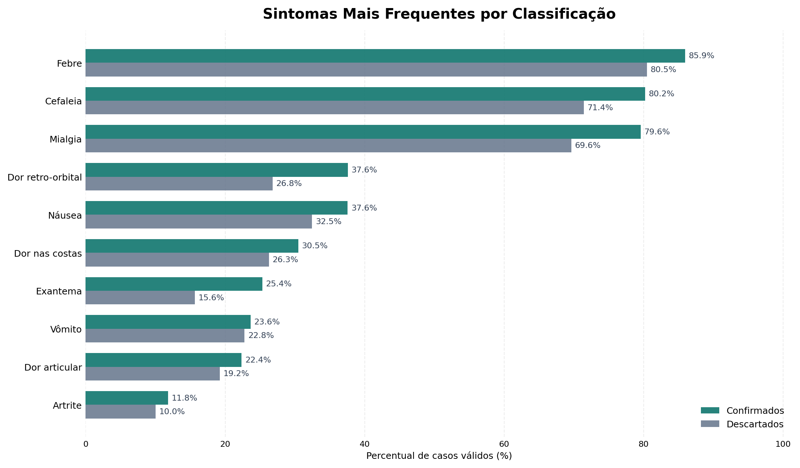
The chart compares the frequency of each symptom between confirmed and discarded cases. Overall, symptoms appear more often in confirmed cases, but the gap between the groups varies a lot.
The dominant triad
Fever (85.9%), headache (80.2%) and myalgia (79.6%) are all above 79% among confirmed cases. They are almost universal and not very discriminating on their own.
These symptoms help characterize the overall clinical picture, but their high frequency does not mean they can settle the classification alone. Since they also appear in discarded cases, their presence on its own provides only part of the information needed.
Largest proportional difference
Rash has the largest relative gap between the classes: 25.4% in confirmed vs 15.6% in discarded cases (+63% relative). One of the most distinguishing signs.
Even though it appears in fewer patients than fever, headache or myalgia, rash shows a larger proportional difference between the classifications. This shows that a less frequent symptom can be more useful for telling the groups apart.
Retro-orbital pain
37.6% in confirmed vs 26.8% in discarded cases, a substantial difference consistent with the classic clinical picture of dengue.
Like rash, retro-orbital pain is not the most common symptom, but it shows a relevant difference between confirmed and discarded cases.
So which symptom identifies dengue?
The analysis does not point to a single symptom that determines the classification. Fever, headache and myalgia are very frequent, while rash and retro-orbital pain show larger proportional differences. The value of this information appears mainly when it is considered together.
Analysis · 03
Is there a difference in the distribution of confirmed cases between men and women? What might help explain it?
After looking at when cases happen and which symptoms appear most often, it is also important to look at who the people in the confirmed records are.
Sex alone does not determine whether someone will have dengue, but its distribution can reveal differences in exposure, routine, occupation and care-seeking. The first step is to check whether men and women appear in similar proportions among confirmed cases.
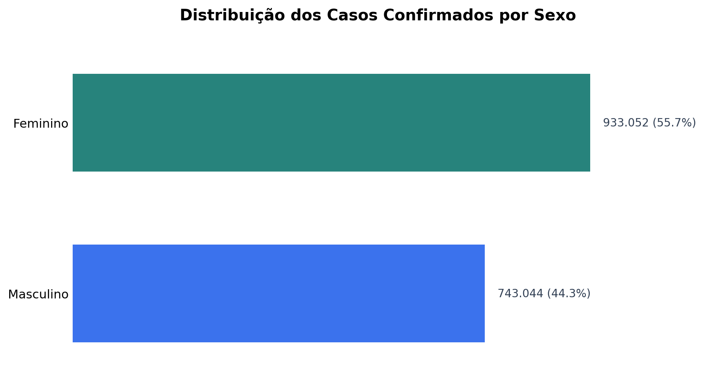
The chart shows a larger share of women among confirmed cases in the period analyzed.
Distribution
933,052 female cases (55.7%) versus 743,044 male cases (44.3%), a difference of about 190 thousand cases over 3 years.
The difference is not small: more than half of the confirmed records belong to women. This raises a new question: could this distribution be related to the environments and activities in these people's daily lives?
Exposure hypothesis
According to the Brazilian newspaper Estado de Minas, the higher share of women may be linked to exposure at home. Aedes aegypti breeds mainly in household water containers, so people who spend more time at home are more exposed.
This hypothesis can be explored using another piece of information in the dataset: occupation. If home-related activities also appear frequently among women, we will have one more piece of evidence for this trend.
Interaction with occupation
"Homemaker" leads among women (77,874 cases), reinforcing the hypothesis that the home environment is the main source of exposure for women.
The analysis by sex, therefore, does not end with the difference in numbers. It leads to a second analysis, related to the recorded occupations and possible exposure environments.
Implication for the model
Sex is a useful variable for the model, both alone and combined with occupation and location. These relationships let the model look at the patient's profile more broadly, instead of relying only on symptoms.
Analysis · 04
Are the most frequent occupations the same for men and women? Can the occupational profile reveal different forms of exposure?
The difference between men and women calls for an analysis of occupations. Since certain professions involve different environments and routines, they can help explain some of the exposure patterns in the data.
To do this, occupations were split by sex. This makes it possible to see which activities appear most often in each group and whether the resulting profiles are similar or different.
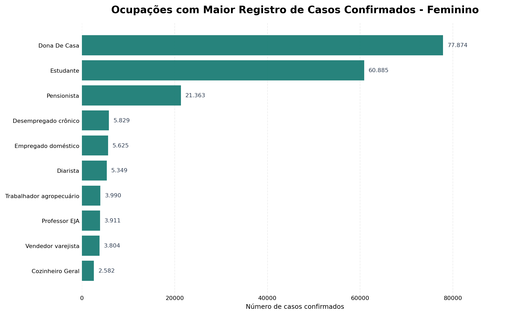
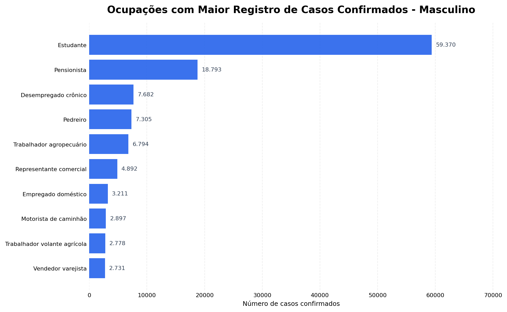
Among women, "Homemaker" ranks first. Students also make up a large share of the confirmed cases.
Among men, students also stand out, but the rest of the distribution shows occupations different from those seen among women.
Exposure at home
Homemaker leads among women with 77,874 cases.
This result connects to the previous analysis, which showed a larger share of women among confirmed cases. The home environment appears again as information possibly related to the exposure profile.
Students in both groups
Leads among men (59k) and ranks 2nd among women (60k).
The high share of students in both groups shows that some occupational profiles are shared, even when the overall distribution differs.
Outdoor exposure
Bricklayer and farmworker appear only among men.
These occupations involve routines different from the home exposure seen among women. They may involve more time outdoors and contact with places that offer different conditions for the mosquito.
What does comparing the two charts show?
Confirmed cases show different occupational profiles for men and women. Some occupations, such as students, appear in both groups, while others are concentrated in only one.
This suggests analyzing sex and occupation together, since occupation adds demographic context and helps represent differences in patients' daily lives.
Key takeaways from the exploratory analysis
The analysis started by looking at the temporal distribution of cases and confirmed strong seasonality, with growth during summer and the highest concentration between March and May.
Next, comparing symptoms showed that the most frequent ones are not necessarily the best at distinguishing the classifications. Fever, headache and myalgia appear in most confirmed cases, while rash and retro-orbital pain show larger proportional differences.
The demographic analysis showed a larger share of women among confirmed cases. This finding led to an investigation of occupations, which revealed different profiles for men and women, as well as a relevant presence of home-related activities.
In summary:
- Dengue varies strongly throughout the year, with notifications most concentrated between March and May.
- Symptoms need to be considered together, because none of them alone is enough to separate confirmed from discarded cases.
- Rash and retro-orbital pain show relevant proportional differences between the classifications.
- Women account for most of the confirmed cases in the period analyzed.
- Sex and occupation have relationships that can help represent different exposure profiles.
- Temporal, clinical, demographic and geographic information should be analyzed together when building the models.
PART 4
Predictive Modeling with Machine Learning
With the data treated and the main relationships explored, the next step was to use all this information to train models that look at each notification as a whole, trying to separate confirmed from discarded cases.
From treated data to the training set
During the exploratory analysis, we saw that no single group of information was enough to represent a case's classification on its own. Symptoms matter, but their meaning also changes when they are seen alongside the time of year, the place of notification and the recent context of the municipality. So I brought these perspectives together into a single set of 107 features, which became the common input for the Machine Learning models.
Training used 2,874,235 records from 2017 to 2019. For each row, the model received the information available about the notification and tried to tell confirmed cases from discarded ones. Test results, clinical progression, case closure, hospitalization and any other later information about the patient were deliberately left out of the features: if they were used, the model could learn the very answer it was supposed to predict, creating an ability that would not exist in a new screening.
I also kept the same feature schema throughout the whole pipeline. This means the order, names and treatment of the variables used in training are the same ones expected at prediction time, which prevents the models from receiving information organized one way during training and another way in use.
Why use three different models?
With the training set ready, I could have picked a single algorithm and pushed it as far as possible, but different models can pick up different patterns in the same information. So I chose an MLP neural network and two tree-based gradient boosting models, XGBoost and LightGBM. All three receive the same 107 features, but they learn the relationships in the data in different ways.
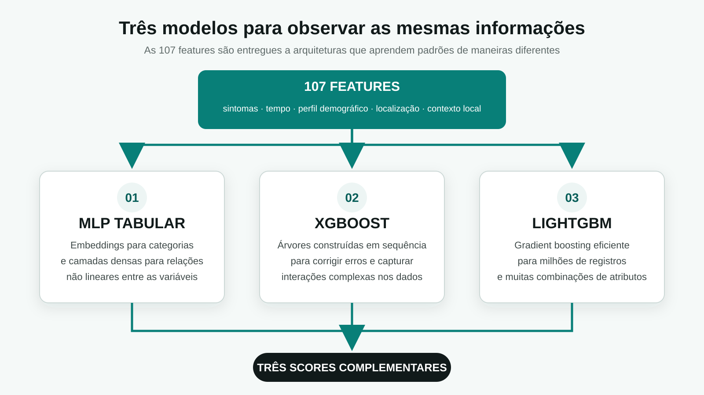
This difference is useful because the three models do not see the data the same way, so they do not have to make exactly the same mistakes. The MLP can find non-linear interactions among many variables at once, while XGBoost and LightGBM build sequences of trees that split the records according to the patterns they find. Each architecture can therefore contribute a different way of understanding the same problem.
How does the MLP learn from tabular data?
Neural networks are often associated with images or text, but they can also be used with tabular data. In this project, I built an MLP that handles categorical and numerical information separately. Education level, occupation, state, municipality and health region were turned into embeddings, smaller representations that let the network learn similarities between categories during training, instead of treating each code as just an ordinary number.
The numerical features were normalized and then joined with the embeddings before entering the network's four hidden layers, with 1024, 512, 256 and 128 neurons. Between these layers I used LeakyReLU, Batch Normalization and Dropout, which help the network learn complex relationships, keep training stable and reduce the risk of memorizing the training records. Below is the main part of the code used to build this structure:

To train the MLP, I used the AdamW optimizer and a loss function that takes the difference between the classes into account. Learning was monitored on the 2020 validation set and stopped when the network stopped improving. As a result, the saved model was not simply the one from the last epoch, but the one that performed best on validation.
XGBoost and LightGBM: two tree-based perspectives
XGBoost and LightGBM belong to the gradient boosting family. Unlike a single decision tree, these models build trees in sequence, with each new step trying to correct part of the previous errors. This is especially useful with tabular data, where symptoms, dates, occupations and locations can form many combinations that are hard to capture with isolated rules.
Even though both use the same principle, they do not build their trees in exactly the same way: XGBoost offers a more controlled regularization and growth process, while LightGBM was designed to train efficiently on large datasets. Since the project has millions of records and over a hundred features, comparing the two implementations showed how these differences played out in classifying cases. Below is the part of the code that creates each model:

To choose the hyperparameters, I used Optuna on stratified samples of the training and validation data. It tested different combinations of number and depth of trees, learning rate, share of rows and features used, and regularization levels. After finding the best configuration, each model was retrained on the full set, always using 2020 to monitor learning and apply early stopping when new trees stopped bringing improvements.
The role of temporal validation
Throughout this process, 2020 played a different role from the training years. Data from 2017 to 2019 was used to teach the models the patterns, while 2020 was used to compare configurations, stop training at the right moment and define how the predictions would be combined. These decisions were thus made by looking at a period after training, but without using the set reserved for the final evaluation.
This separation mattered because a random split would mix records from different years between training and validation. Since dengue circulation, the way notifications are filled out and the epidemiological context itself change over time, a random split could show a better result than what would actually happen in a future period. That is why I respected the order of the years, making the pipeline learn from the past and then classify new notifications.
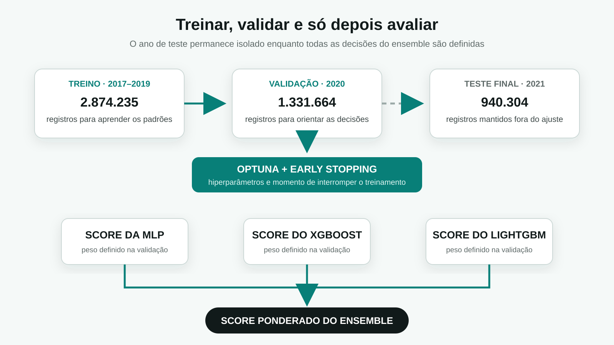
Only after finalizing the models, their hyperparameters, the ensemble weights and the classification rule was the 2021 set loaded for evaluation. Its 940,304 records took no part in any earlier choice, so the final result represents an evaluation outside the period used to build the system.
Combining the predictions into an ensemble
After training, each model produced its own score for a case. Instead of a simple vote, I combined these three values with a weighted average. The weights were set from each model's recall on the 2020 validation set and then normalized, so the models that found more confirmed cases in that period had a slightly larger share of the combined result. Below is the part of the code that performs this combination:

The idea of the ensemble was to take advantage of the differences between the models. When MLP, XGBoost and LightGBM find a similar pattern, the combined score has the support of all three; when they disagree, the weights help balance the predictions according to how each model behaved on validation.
In the end, this process delivers a single classification score, which still has to be compared with a threshold to decide between confirmed and discarded. This value is not a calibrated clinical probability and does not make a diagnosis. The choice of operating point and its impact on hits and errors are analyzed in the next part, along with the model's metrics.
What was settled before the evaluation
With that, the modeling stage ended with a single, reproducible pipeline, in which all models receive the same set of information and no decision depends on the records reserved for the final test.
In summary:
- The 107 features bring clinical, temporal, demographic, geographic and epidemiological information together into a single input.
- The MLP uses embeddings and dense layers to learn non-linear relationships in tabular data.
- XGBoost and LightGBM use sequences of trees and bring two different ways of looking at the same problem.
- The year 2020 guides optimization, early stopping and the ensemble, without taking part in the main training.
- The ensemble weights are set on validation and stay frozen before the 2021 test set is opened.
- The output is a classification score, not a diagnosis or a clinical probability.
In the next part, we will look at how this ensemble performed on the 940,304 records from 2021, and at what Accuracy, Precision, Recall and ROC-AUC say about the classification.
PART 5
Metrics and Model Evaluation
After finishing training, setting the ensemble weights and freezing the decision threshold, I opened the 2021 temporal set to see how the model would perform on records that had not taken part in any earlier choice.
Opening the final 2021 test
The evaluation covered 940,304 notifications: 484,586 discarded cases and 455,718 confirmed cases. The two groups are close in size, and since the records come from a year after the training period, the test is closer to a real situation, in which the system learns from past data and then receives new notifications in the future.
At this point, no hyperparameter was changed, the models were not retrained and the 2021 result was not used to choose the threshold. So the metrics do not show the best fit that could be found by looking at the test itself, but the behavior of the pipeline that was already defined before these records were opened.
Accuracy
Correctly classified 677,991 of the 940,304 records evaluated.
Precision
Out of every 100 cases flagged as dengue, about 66 were confirmed.
Recall
Found about 87 out of every 100 actually confirmed dengue cases.
ROC-AUC
Measures the ability to separate confirmed and discarded cases across different thresholds.
Accuracy shows that the ensemble got just over seven out of ten classifications right, but this value should not be read alone: the goal of the chosen threshold was not to spread errors evenly, but to reduce the number of confirmed cases that would be missed. That is why Precision and Recall need to be read together to understand which type of error the system was designed to accept.
With a Precision of 66.1%, some of the notifications classified as dengue are still discarded cases, while the Recall of 87.3% shows that most of the actually confirmed cases were found. This balance makes sense for a screening support tool, since letting a true case slip through can be more worrying than sending an extra case for evaluation, even though it also increases the number of false positives.
Why does the 0.30 threshold change how we read the model?
The ensemble does not directly output the words confirmed or discarded: it produces a continuous score, and the threshold turns that value into a classification. When the cutoff is lowered, more records are flagged as positive, Recall tends to increase and fewer confirmed cases fall below the cutoff. However, Precision and specificity may drop, because more discarded cases are also sent to the positive group.
The 0.30 threshold was set using only the 2020 validation set and stayed frozen before the final test, while the individual models kept their own thresholds chosen on the same period. So the 2021 evaluation was not used afterwards to look for the cutoff that would produce the most favorable metric.

There is a region where different thresholds produce similar F1 values, so the single highest value of this metric does not have to be the only decision rule. For the ensemble, the 0.30 point keeps a result close to the highest values and increases sensitivity, a choice consistent with the goal of finding more confirmed cases before the final evaluation.
Reading hits and errors in the confusion matrix
Metrics summarize the model's behavior, but the confusion matrix shows where each percentage comes from, separating correct predictions on discarded and confirmed cases from the two possible types of error. Instead of looking only at Accuracy, we can see how many records the chosen threshold pushed to each side.

The key reading lies in the relationship between the row of confirmed cases and the row of discarded cases: the bottom-right quadrant shows the confirmed cases found, while the top-right one gathers the discarded cases that were also sent to the positive class. This shows why increasing Recall can also increase false positives.
This trade-off needs to be clear to whoever uses the result: the system accepts sending more records to the positive group in order to reduce the number of confirmed cases below the threshold. This behavior can help with prioritization, but it should never be interpreted as an automatic diagnosis.
Was the ensemble better on every metric?
Comparing the models shows that there is more than one way to decide which one was best. XGBoost and LightGBM reached slightly higher Accuracy and Precision at their own operating points, while the ensemble, using the 0.30 threshold, gave up some of that precision to find a much larger share of the confirmed cases.

The chart shows that the models reached similar results on several metrics, while the differences grow on those that depend on the cutoff. The main role of the ensemble is therefore not to beat the other models on every result, but to combine their predictions to deliver the behavior chosen for screening.
The ability to separate the two groups
ROC-AUC looks at the model across many thresholds, comparing the true positive rate with the false positive rate. It does not just show the decision made at 0.30, but the overall ability to rank confirmed cases above discarded ones at different cutoffs.


The nearly overlapping curves show that the models have a similar ability to separate the groups, and that the most visible difference appears when the scores are turned into classes by a threshold, while the Precision-Recall curve shows the trade-off between finding more confirmed cases and keeping more confidence in the positive flags.
It is also important not to confuse ROC-AUC with Accuracy or with clinical probability. This metric summarizes the ranking produced by the score across thresholds; it does not mean that the same percentage of patients will be classified correctly, nor that the value produced represents a calibrated individual risk.
What can we conclude from the metrics?
The temporal test showed that the ensemble can find most of the confirmed cases and keep a good separation between the two groups, but this comes with a relevant number of false positives. It therefore makes more sense as a support and prioritization tool than as a final decision on each notification.
The metrics also show that the choice of threshold is part of the system's behavior: a model can separate the groups well and still produce very different classifications depending on the cutoff. That is why Accuracy, Precision, Recall, the confusion matrix and ROC-AUC were analyzed together, always keeping the temporal separation and avoiding decisions based on the final test.
In the next part, we will see how this score was used in a web application, what information reaches the API and how the result is presented without taking on the role of a clinical diagnosis.
PART 6
Web Application and Model Deployment
After training and evaluating the models, the next step was to turn the whole pipeline into an interface, making it possible to fill in a notification, send its data to the API and see the result without running notebooks or code by hand.
From notification to model scores
The Screening page brings together the information available at the time of notification, such as age, sex, pregnancy, race, education level, occupation, location, dates and symptoms. You can also choose which arbovirus will be evaluated. The interface organizes the fields sent to the backend and does not depend on later information, such as test results, clinical progression or case closure.
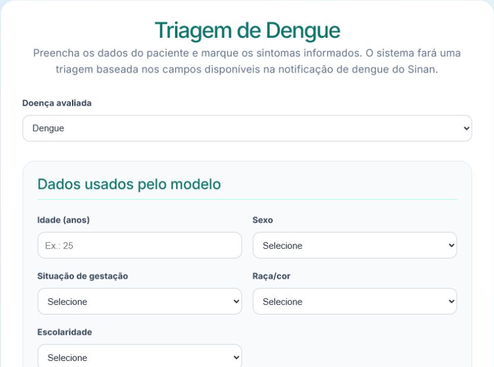
The interface was built with React and TypeScript, while the FastAPI API receives the fields, applies the same preparation used during training and creates the features the models expect. Then MLP, XGBoost and LightGBM produce their individual scores, which the ensemble combines before the response goes back to the browser.
Presenting the result without turning it into a diagnosis
In the response, the three scores appear separately along with the weights used in the ensemble, and right below, the application shows the combined classification and the threshold applied. This makes it clear that the final result does not come from a single algorithm, and shows when the models agree or disagree.
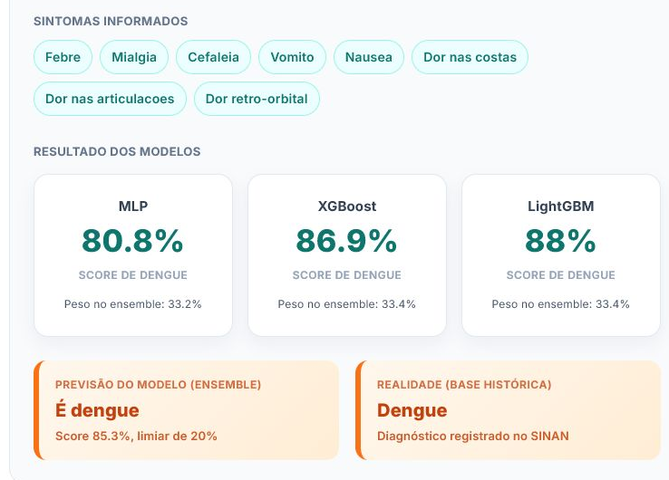
Besides manual screening, the Home page lets you draw a random anonymized case from the test set and compare the prediction with the classification recorded in the historical database. This simulation is meant to demonstrate the full pipeline, not to clinically validate anyone, so the application presents the result as a classification score and keeps the notice that the tool does not replace evaluation by a health professional.
Showing the data journey too
So that the application would not be limited to the form, I created a Pipeline page that explains the path from SINAN data through preparation, training, evaluation, saved models and the API. I also created an Epidemiological Overview page that brings together the main findings of the exploratory analysis, so visitors can understand both the result shown and the whole process behind it.
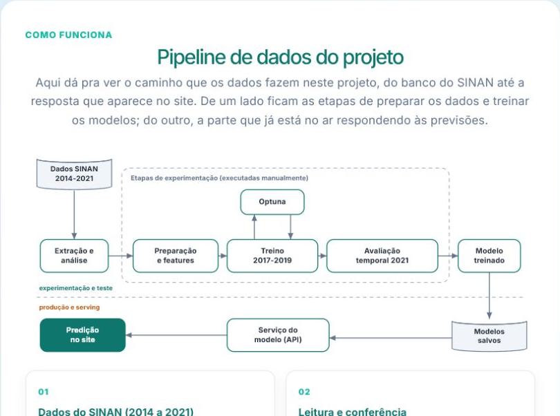
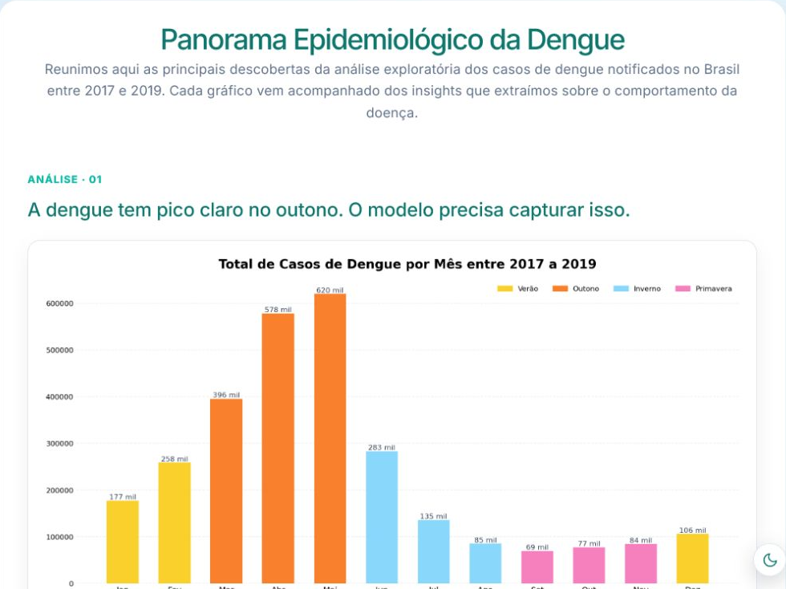
STATIC DEMO
Explore the application's interface
Browse the screening, pipeline and epidemiological overview pages. The demo keeps the project's visual flow, but it does not run predictions or queries, because the models depend on their own server. The demo interface is in Portuguese.
Open visual demoThe final result of the project
With the application, I brought data, models, API and interface together into a single flow, making it possible to test notifications, follow the individual scores and understand how the combined classification was formed.
At the same time, the project's main limitation remains visible in how the result is presented: the system offers screening support and a technical demonstration of Machine Learning on SINAN data, but it does not make a diagnosis and does not replace a clinical assessment.